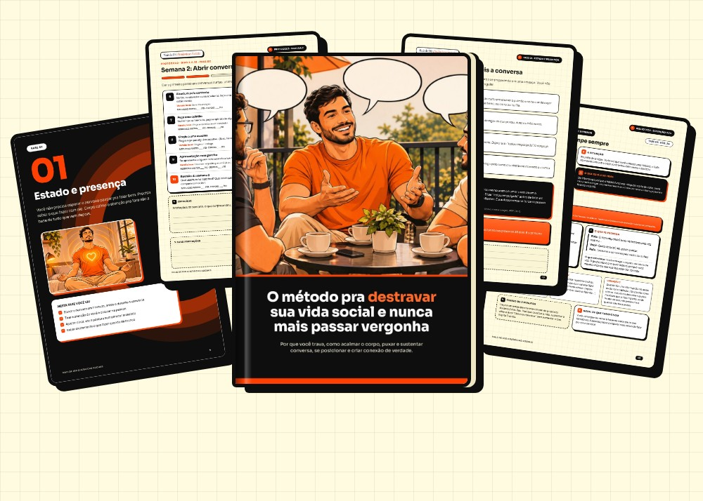
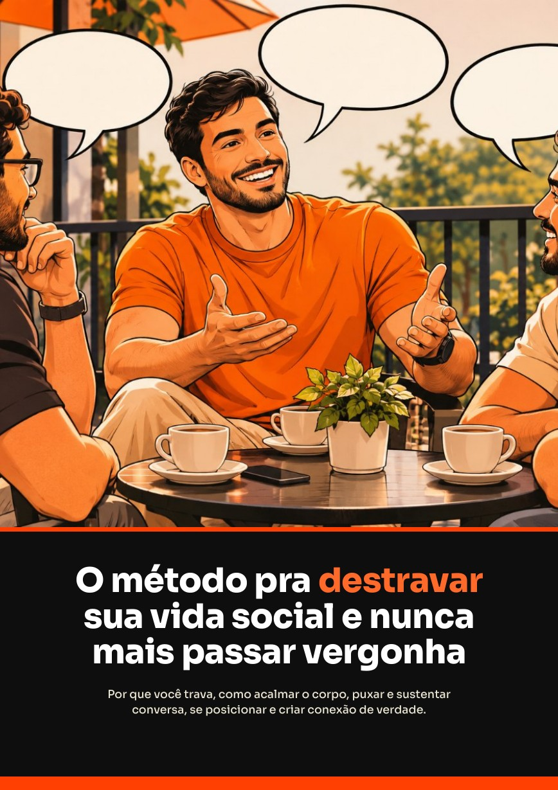
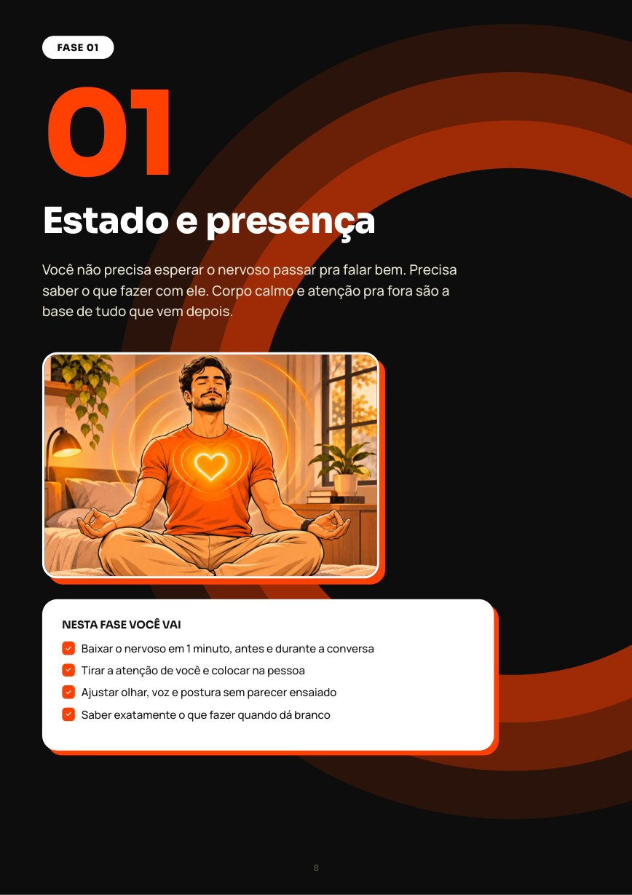
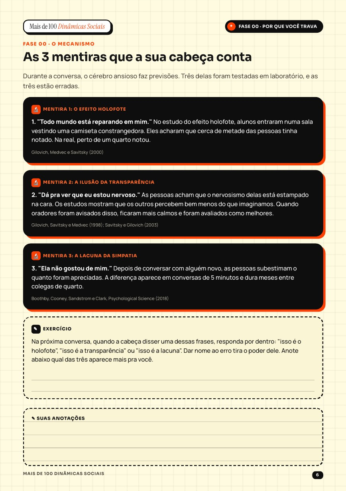
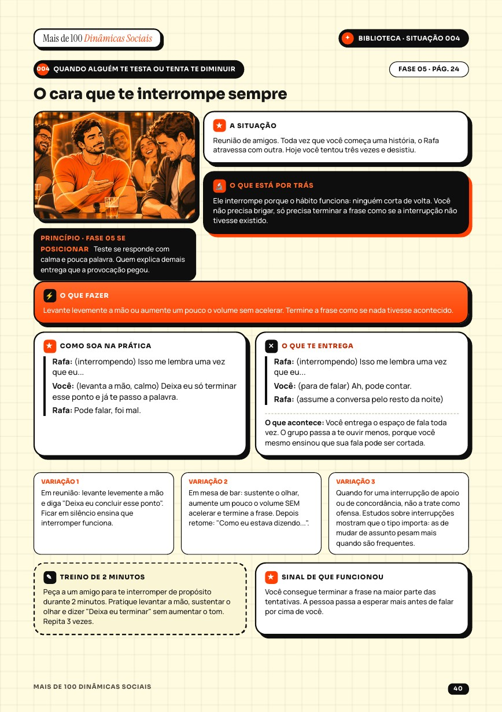
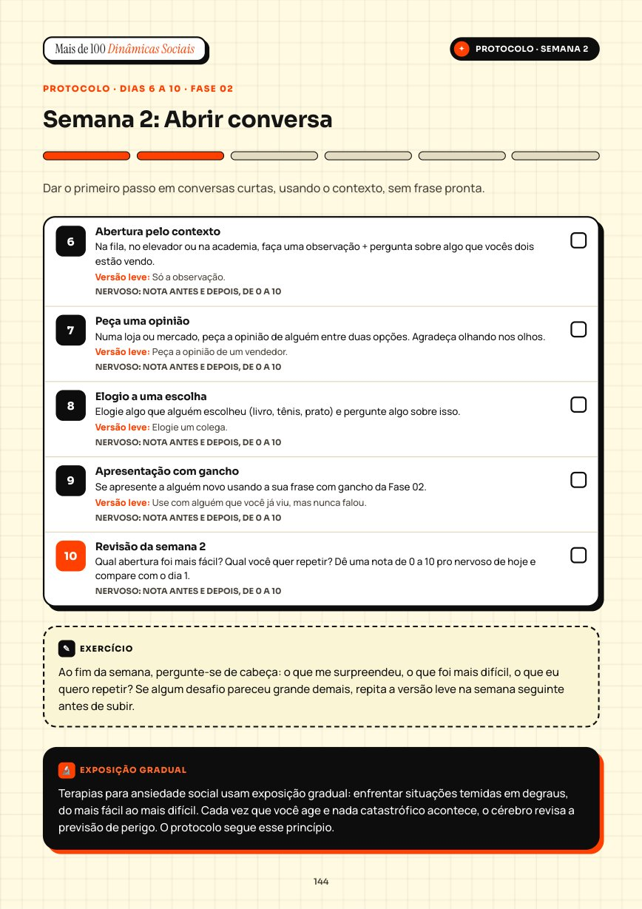
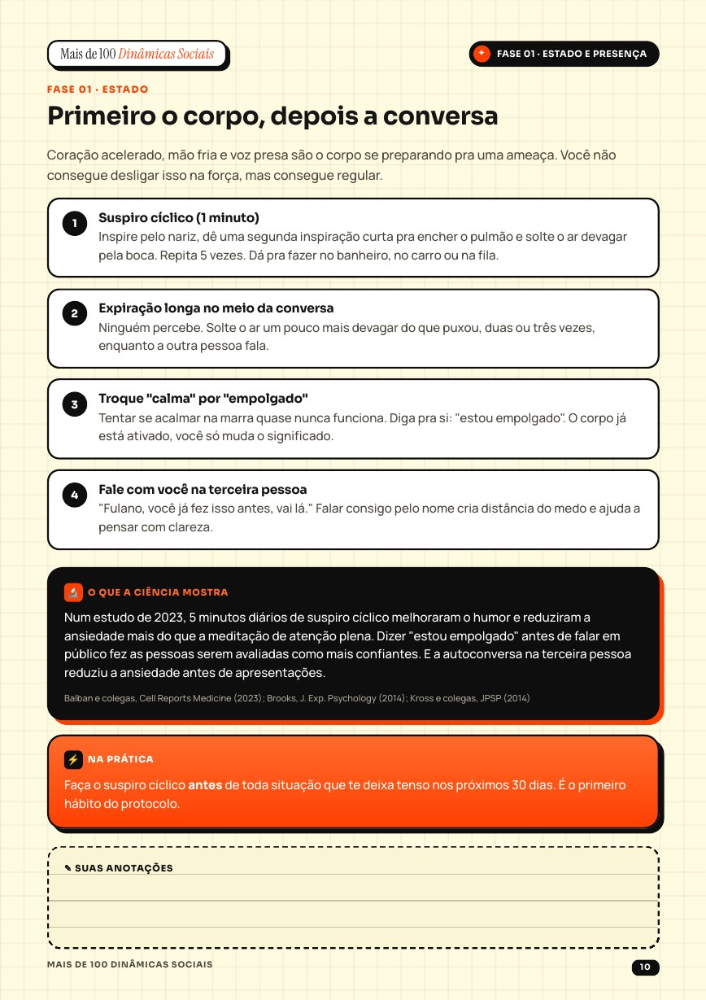
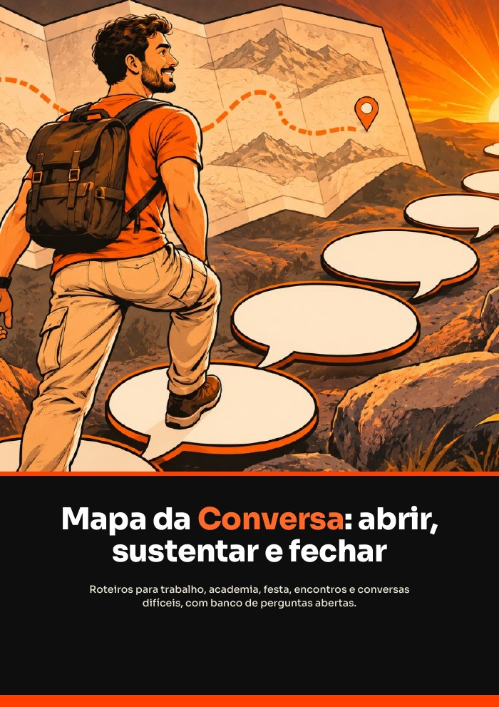
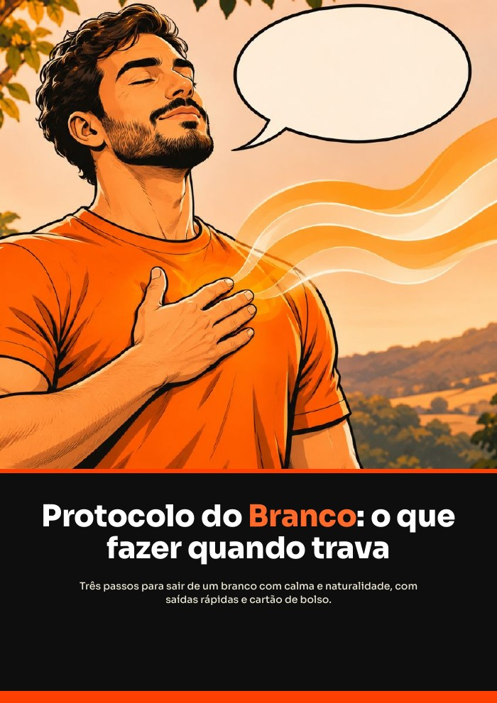
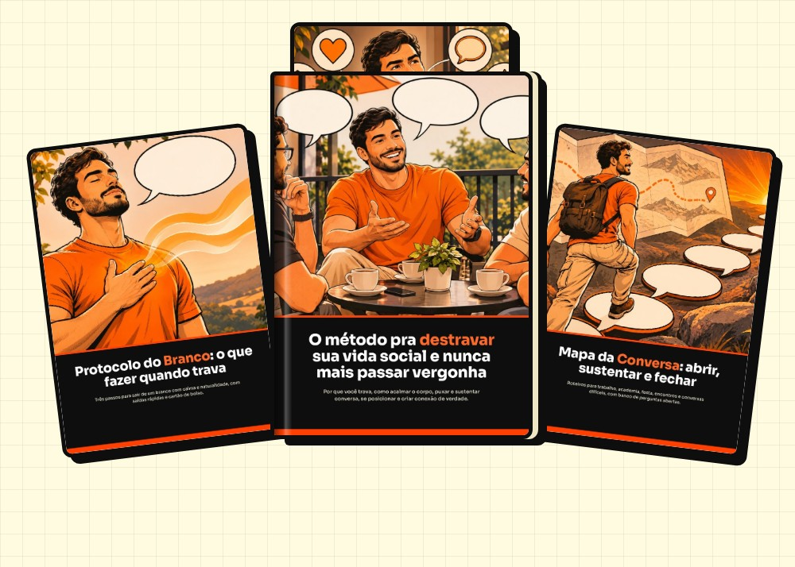

🟧Mesmo que você seja tímido, trave na hora H ou só pense no que devia ter dito horas depois.

Você já sentiu que sabia o que dizer… só que três horas depois?
Enquanto isso, tem cara que responde na hora, com calma, e sai da conversa respeitado. E você fica pensando: "o que ele tem que eu não tenho?"
Quem conversa bem não nasceu assim. Não é dom, não é personalidade, não é ser extrovertido.
Não é falta de coragem.
É falta de
Quando você trava, o cérebro vira a atenção pra dentro: o que estão pensando de mim, e se eu errar? Sobra pouco espaço pra escutar e responder. Pesquisas mostram que quase todo mundo percebe você muito menos do que você imagina, e que existe um passo a passo pra quebrar esse ciclo.
Habilidade social funciona como academia: o que muda a sua vida é o treino, não só a leitura.

Um método em 8 fases pra destravar a sua vida social, com 105 situações reais de consulta e um protocolo de 30 dias pra praticar.
Método, situações reais e protocolo de treino, tudo fácil de consultar no celular.





Arraste pro lado e toque pra ampliar
Foi feito pra ser simples. Qualquer um consegue aplicar, em 3 etapas que se completam.
"Quem entende o ciclo, sai dele."
"Achou a cena, achou o caminho."
"Um desafio por dia, do leve ao difícil."
O ciclo da trava, as 3 mentiras da sua cabeça e o seu diagnóstico.
Acalmar o corpo, atenção pra fora e o que fazer no branco.
Aberturas pra cada lugar e como se aproximar sem medo.
Perguntas de acompanhamento, os 3 fios e como fechar bem.
Carisma na prática: presença, calor e humor que aproxima.
Responder provocação, dizer não e discordar com calma.
Chegar sozinho, entrar numa roda e sair sem fugir.
Mensagens, retomar amizades e criar rotina de convívio.
Cenas reais com o que está por trás, o que fazer e o treino.
Um desafio por dia, com registro e versão leve.
E ainda: quando procurar ajuda profissional e as fontes das pesquisas citadas.
O e-book sozinho já resolve…
Junto com o e-book, você leva 3 bônus que aceleram tudo.
"Treine o ponto certo, não o errado"

Bônus 02"Um caminho claro pra qualquer conversa"

Bônus 03"Saia do branco com calma e naturalidade"

Tenha acesso a tudo isso por uma condição especial:
Acesso imediato. 7 dias de garantia.
Leia, aplique e siga o protocolo. Se dentro de 7 dias você sentir que não valeu:
O risco é todo nosso. Você só tem a ganhar.
Quero entrar sem riscoNão. O e-book ensina um método em 8 fases: entender o que te trava, acalmar o corpo, abrir e sustentar conversa, se posicionar e manter o contato. As situações e frases são exemplos pra consulta, e o protocolo de 30 dias é onde você pratica.
Logo depois da compra, você recebe o acesso ao e-book e aos bônus no seu e-mail.
Não. O protocolo tem desafios curtos, de poucos minutos por dia, com uma versão leve pros dias difíceis.
Sim. O e-book abre no celular, no tablet e no computador, e você ainda pode imprimir o protocolo.
Não. É só abrir o e-book. Você marca os dias na tela ou no papel.
O e-book treina habilidades e pode ajudar, mas não substitui acompanhamento. Se o desconforto limita muito a sua vida, procure também um psicólogo.
Você tem 7 dias de garantia. Basta pedir o reembolso.